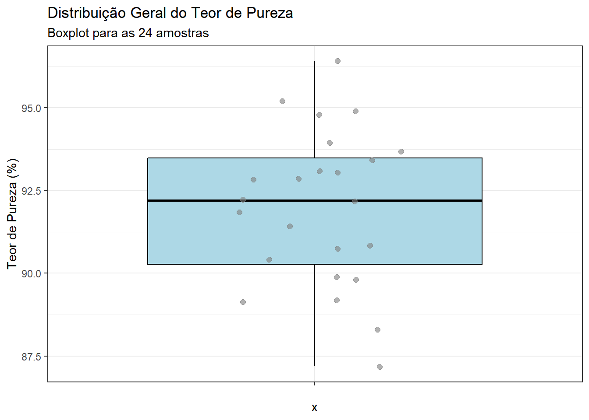
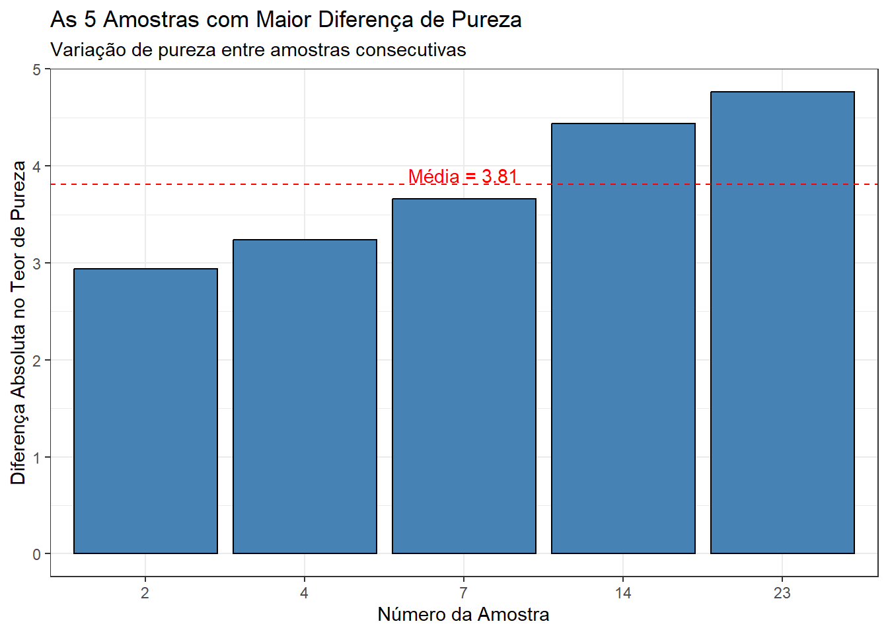
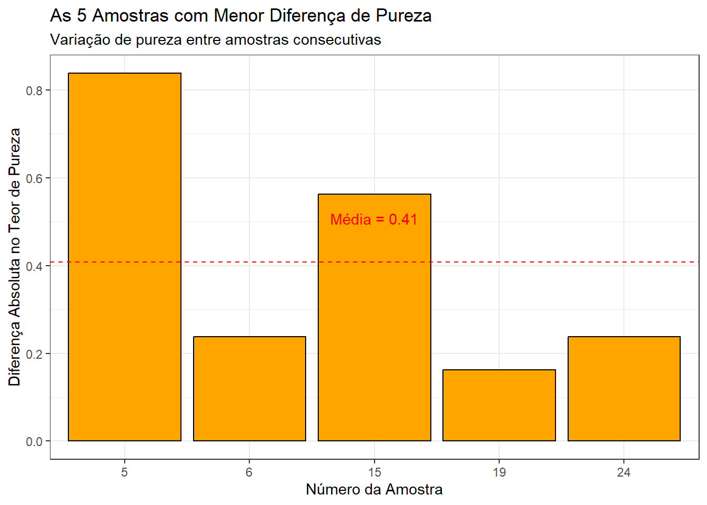
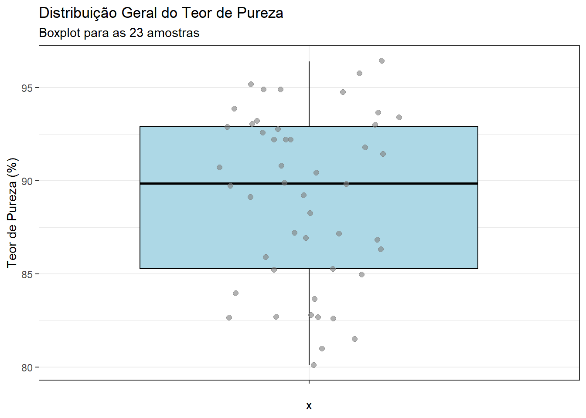
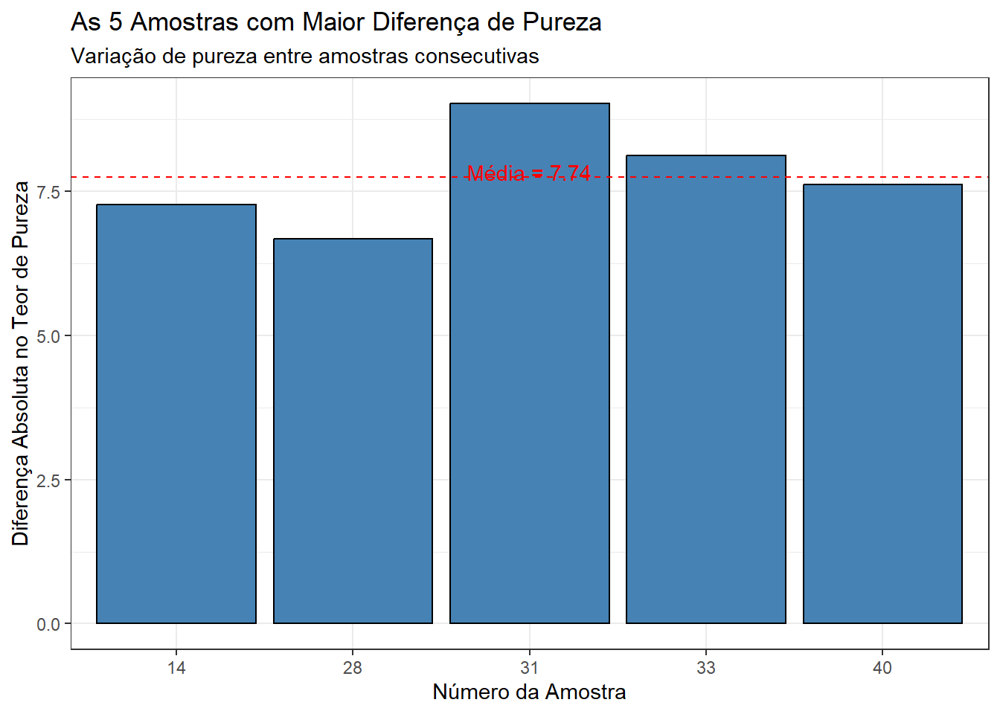
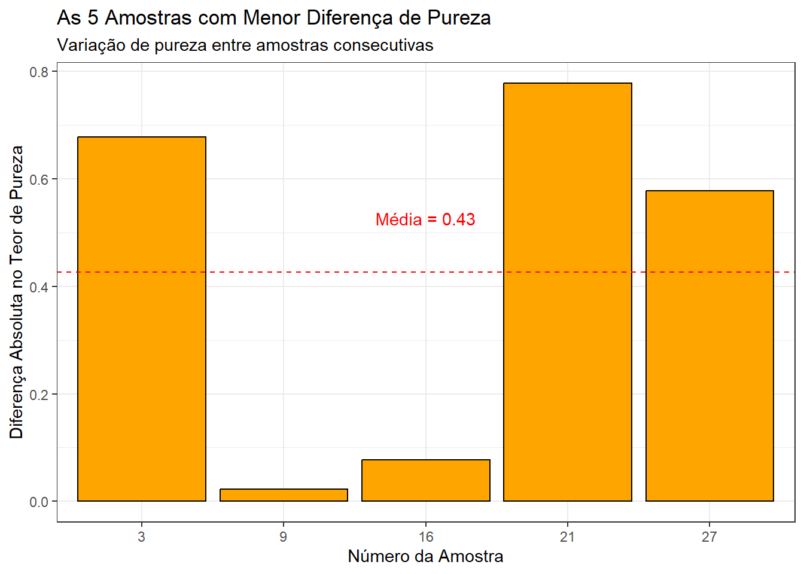

# Carregar pacotes necessários
suppressMessages(library(plotly))
suppressMessages(library(ggplot2))
suppressMessages(library(dplyr))
# Criar os dados das amostras
# Criando o data frame com os valores da tabela
tabela_pureza <- data.frame(
Numero_Amostra = 1:24,
Teor_Pureza = c(92.9, 94.9, 89.8, 95.2, 92.8, 92.2, 88.3, 90.4, 89.1, 90.7,
93.0, 93.9, 94.8, 96.4, 91.4, 89.2, 93.7, 90.8, 91.8, 93.1,
89.9, 93.4, 87.2, 92.2),
Amplitude_Movel = c(NA, 2.0, 5.1, 5.4, 2.4, 0.6, 3.9, 2.1, 1.3, 1.6,
2.3, 0.9, 0.9, 1.6, 5.0, 2.2, 4.5, 2.9, 1.0, 1.3,
3.2, 3.5, 6.2, 5.0)
); suppressMessages(attach(tabela_pureza))Controle de Qualidade: Monitorando o Teor de Pureza com Gráficos X e AM
Introdução do Procedimento
Este procedimento descreve a fabricação de uma substância química, que exige a implementação de um controle estatístico para garantir o teor pureza do seu conteúdo.
Análise Estatística das 24 amostras:
Análise descritiva
# Calcular o resumo estatístico para a coluna "Teor_Pureza"
resumo <- summary(tabela_pureza[,c(2,3)]); resumo Teor_Pureza Amplitude_Movel
Min. :87.20 Min. :0.600
1st Qu.:90.28 1st Qu.:1.450
Median :92.20 Median :2.300
Mean :91.96 Mean :2.822
3rd Qu.:93.47 3rd Qu.:4.200
Max. :96.40 Max. :6.200
NA's :1 Boxplot para estudar a diferenças entre os Teor de pureza das 24 amostras estudadas para o Teour de Pureza
# Criar uma coluna categórica para identificar os pontos fora dos limites
tabela_pureza <- tabela_pureza %>%
mutate(Classificacao = case_when(
Teor_Pureza > mean(Teor_Pureza) ~ "Acima do média",
Teor_Pureza < mean(Teor_Pureza) ~ "Abaixo do média",
))
# Criar o boxplot com os pontos coloridos por categoria
ggplot(tabela_pureza, aes(x = "", y = Teor_Pureza)) +
geom_boxplot(fill = "lightblue", color = "black") +
geom_jitter(aes(color = Classificacao), width = 0.2, size = 2, alpha = 0.6) +
scale_color_manual(
name = "Status da amostra", # Novo título da legenda
values = c("Acima da média" = "red", "Abaixo da média" = "blue"),
labels = c("Acima da média","Acima Acima da média ")
) +
labs(title = "Distribuição Geral do Teor de Pureza",
subtitle = "Boxplot para as 24 amostras",
y = "Teor de Pureza (%)") +
theme_bw() +
theme(legend.position = "bottom") # Posiciona a legenda abaixo do gráficoWarning: No shared levels found between `names(values)` of the manual scale and the
data's colour values.
No shared levels found between `names(values)` of the manual scale and the
data's colour values.
Foi constatado que todas as amostras estão dentro dos padrões de qualidade
# Carregar bibliotecas necessárias
library(dplyr)
library(ggplot2)
# Calcular a diferença absoluta no teor de pureza entre amostras consecutivas
tabela_pureza <- tabela_pureza %>%
mutate(Diferenca_Pureza = abs(Teor_Pureza -mean(Teor_Pureza))) # Diferença entre amostras consecutivas
# Selecionar as 5 amostras com a maior diferença no teor de pureza
top_5_maior_diferenca <- tabela_pureza %>%
arrange(desc(Diferenca_Pureza)) %>%
slice_head(n = 5)
# Calcular a média da diferença
media_diferenca_maior <- mean(top_5_maior_diferenca$Diferenca_Pureza, na.rm = TRUE)
# Criar o gráfico de barras
ggplot(top_5_maior_diferenca, aes(x = factor(Numero_Amostra), y = Diferenca_Pureza)) +
geom_bar(stat = "identity", fill = "steelblue", color = "black") +
geom_hline(yintercept = media_diferenca_maior, linetype = "dashed", color = "red") + # Linha de média
labs(title = "As 5 Amostras com Maior Diferença de Pureza",
subtitle = "Variação de pureza entre amostras consecutivas",
x = "Número da Amostra",
y = "Diferença Absoluta no Teor de Pureza") +
theme_bw() +
annotate("text", x = 3, y = media_diferenca_maior + 0.1, label = paste("Média =", round(media_diferenca_maior, 2)), color = "red")
# Calcular a diferença absoluta no teor de pureza entre amostras consecutivas
tabela_pureza <- tabela_pureza %>%
mutate(Diferenca_Pureza = abs(Teor_Pureza - mean(Teor_Pureza))) # Diferença entre amostras consecutivas
# Selecionar as 5 amostras com a menor diferença no teor de pureza
top_5_menor_diferenca <- tabela_pureza %>%
arrange(Diferenca_Pureza) %>%
slice_head(n = 5)
# Calcular a média da diferença
media_diferenca <- mean(top_5_menor_diferenca$Diferenca_Pureza, na.rm = TRUE)
# Criar o gráfico de barras
ggplot(top_5_menor_diferenca, aes(x = factor(Numero_Amostra), y = Diferenca_Pureza)) +
geom_bar(stat = "identity", fill = "orange", color = "black") +
geom_hline(yintercept = media_diferenca, linetype = "dashed", color = "red") + # Linha de média
labs(title = "As 5 Amostras com Menor Diferença de Pureza",
subtitle = "Variação de pureza entre amostras consecutivas",
x = "Número da Amostra",
y = "Diferença Absoluta no Teor de Pureza") +
theme_bw() +
annotate("text", x = 3, y = media_diferenca + 0.1, label = paste("Média =", round(media_diferenca, 2)), color = "red")
Resumo geral
# Calcular o resumo estatístico para a coluna "Teor_Pureza" e "Amplitude_Movel"
resumo <- summary(na.omit(tabela_pureza[, c(2, 3)])); resumo Teor_Pureza Amplitude_Movel
Min. :87.20 Min. :0.600
1st Qu.:90.15 1st Qu.:1.450
Median :92.20 Median :2.300
Mean :91.92 Mean :2.822
3rd Qu.:93.55 3rd Qu.:4.200
Max. :96.40 Max. :6.200 Cálculo dos limites de controle para os gráfico X e AM
X_bar = mean(Teor_Pureza)
AM_bar = mean(na.omit(Amplitude_Movel))
D3 = 0 ; D4 = 3.267 ; d2 = 1.128
# Cálculo dos limites de controle para os gráfico AM
LSC_X <- X_bar + 3*(AM_bar/d2);
LM = X_bar;
LIC_X <- X_bar - 3*(AM_bar/d2);
# Cálculo dos limites de controle para os gráfico X
LSC_AM <-D4*AM_bar;
LM = AM_bar;
LIC_AM <-D3*AM_bar;
# Exibindo os valores médios
cat("Média do Teor de Pureza:", X_bar, "\n")Média do Teor de Pureza: 91.9625 cat("Média da Amplitude Móvel:", AM_bar, "\n")Média da Amplitude Móvel: 2.821739 # Exibir os limites calculados
cat("Limites de Controle para o Gráfico expression(AM):\n")Limites de Controle para o Gráfico expression(AM):cat("LSC:", LSC_AM, "\n")LSC: 9.218622 cat("LIC:", LIC_AM, "\n\n")LIC: 0 cat("Limites de Controle para o Gráfico X:\n")Limites de Controle para o Gráfico X:cat("LSC:", LSC_X, "\n")LSC: 99.46713 cat("LIC:", LIC_X, "\n")LIC: 84.45787 Gráfico para Medidas Individuais
O Limite Médio (LM) é obtido a partir da média geral das amostras. Para calcular os Limites de Controle da média, utiliza-se a constante d2.
# Cálculo das médias e desvios padrão das amostras
# vetor_medias <- rowMeans(Teor_Pureza)
# vetor_desvios <- apply(dados, 1, sd)
#
# dados$medias <- vetor_medias
# dados$desvios <- vetor_desvios
# Gráfico de Controle X̄ interativo
grafico_X <- plot_ly(x = seq_along(Teor_Pureza), y = Teor_Pureza, type = 'scatter', mode = 'lines+markers',
name = 'Média das Amostras') %>%
add_trace(y = rep(X_bar, length(Teor_Pureza)), mode = "lines", name = "Média X̄", line = list(color = "blue")) %>%
add_trace(y = rep(LSC_X, length(Teor_Pureza)), mode = "lines", name = "LSC", line = list(color = "red", dash = 'dash')) %>%
add_trace(y = rep(LIC_X, length(Teor_Pureza)), mode = "lines", name = "LIC", line = list(color = "red", dash = 'dash')) %>%
layout(title = "Gráfico de Controle X̄",
xaxis = list(title = "Amostra"),
yaxis = list(title = "Média"))
grafico_XGráfico para a amplitude móvel
Nesta fase, iniciamos o cálculo dos limites de controle inferior (LIC) e superior (LSC). Para determinar esses limites, é necessário calcular a amplitude média das amostras. Para o cálculo do Limite Inferior de Controle (LIC), utilizamos a constante D3, enquanto para o Limite Superior de Controle (LSC), aplicamos a constante D4.
# Gráfico de Controle AM interativo
grafico_AM <- plot_ly(x = seq_along(Amplitude_Movel), y = Amplitude_Movel, type = 'scatter', mode = 'lines+markers',
name = 'Desvio Padrão') %>%
add_trace(y = rep(AM_bar, length(Amplitude_Movel)), mode = "lines", name = "Média AM", line = list(color = "blue")) %>%
add_trace(y = rep(LSC_AM, length(Amplitude_Movel)), mode = "lines", name = "LSC", line = list(color = "red", dash = 'dash')) %>%
add_trace(y = rep(LIC_AM, length(Amplitude_Movel)), mode = "lines", name = "LIC", line = list(color = "red", dash = 'dash')) %>%
layout(title = "Gráfico de Controle AM",
xaxis = list(title = "Amostra"),
yaxis = list(title = "Desvio Padrão"))
# Exibir os gráficos interativos
grafico_AMNenhuma amostra fora de controle foi identificada no gráfico de medidas Individuais, isso indica a ausência de amostras fora de controle no gráfico de medidas individuais indica que o processo está estável e dentro dos limites esperados, sem variações especiais.
Análise Estatística das 48 amostras:
# Para as 23 amotras de
tabela_pureza2 <- data.frame(
Numero_Amostra1 = 1:48,
Teor_Pureza1 = c(92.9, 94.9, 89.8, 95.2, 92.8, 92.2, 88.3, 90.4, 89.1, 90.7,
93.0, 93.9, 94.8, 96.4, 91.4, 89.2, 93.7, 90.8, 91.8, 93.1,
89.9, 93.4, 87.2, 92.2,93.2,94.9,89.7,95.8,92.6,92.2,80.1,
82.7,81,82.7,85.3,85.9,86.8,86.3,83.7,81.5,86.9,82.7,84,
85.2,82.8,85,87.2,82.6),
Amplitude_Movel1 = c(NA, 2.0, 5.1, 5.4, 2.4, 0.6, 3.9, 2.1, 1.3, 1.6,
2.3, 0.9, 0.9, 1.6, 5.0, 2.2, 4.5, 2.9, 1.0, 1.3,
3.2, 3.5, 6.2, 5.0,1.0,1.7,5.2,6.1,3.2,0.4,12.2,2.6,
1.7,1.7,2.6,0.6,0.9,0.5,2.6,2.2,5.4,4.2,1.3,1.2,2.4,2.2,
2.2,4.6)
)Análise descritiva
Boxplot para estudar a diferenças entre os Teor de pureza das 48 amostras estudadas para o Teour de Pureza
library(dplyr)
library(ggplot2)
# Criar uma coluna categórica para identificar os pontos fora dos limites
tabela_pureza2 <- tabela_pureza2 %>%
mutate(Classificacao2 = case_when(
Teor_Pureza1 > mean(Teor_Pureza1) ~ "Acima da média ",
Teor_Pureza1 < mean(Teor_Pureza1) ~ "Abaixo da média",
TRUE ~ "Dentro dos Limites" # Condição padrão
))
# Criar o boxplot com os pontos coloridos por categoria
ggplot(tabela_pureza2, aes(x = "", y = Teor_Pureza1)) +
geom_boxplot(fill = "lightblue", color = "black") +
geom_jitter(aes(color = Classificacao2), width = 0.2, size = 2, alpha = 0.6) +
scale_color_manual(
name = "Status da amostra", # Novo título da legenda
values = c("Abaixo do LIC" = "blue", "Dentro dos Limites" = "green", "Acima do LSC" = "red"),
labels = c("Abaixo do limite de qualidade","Dentro do padrão de qualidade","Acima do limite de qualidade")
) +
labs(title = "Distribuição Geral do Teor de Pureza",
subtitle = "Boxplot para as 23 amostras",
y = "Teor de Pureza (%)") +
theme_bw() +
theme(legend.position = "bottom") # Posiciona a legenda abaixo do gráficoWarning: No shared levels found between `names(values)` of the manual scale and the
data's colour values.
No shared levels found between `names(values)` of the manual scale and the
data's colour values.
# Calcular a diferença absoluta no teor de pureza entre amostras consecutivas
tabela_pureza2 <- tabela_pureza2 %>%
mutate(Diferenca_Pureza = abs(Teor_Pureza1 - mean(Teor_Pureza1))) # Diferença entre amostras consecutivas
# Selecionar as 5 amostras com a maior diferença no teor de pureza
top_5_maior_diferenca <- tabela_pureza2 %>%
arrange(desc(Diferenca_Pureza)) %>%
slice_head(n = 5)
# Calcular a média da diferença
media_diferenca_maior <- mean(top_5_maior_diferenca$Diferenca_Pureza, na.rm = TRUE)
# Criar o gráfico de barras
ggplot(top_5_maior_diferenca, aes(x = factor(Numero_Amostra1), y = Diferenca_Pureza)) +
geom_bar(stat = "identity", fill = "steelblue", color = "black") +
geom_hline(yintercept = media_diferenca_maior, linetype = "dashed", color = "red") + # Linha de média
labs(title = "As 5 Amostras com Maior Diferença de Pureza",
subtitle = "Variação de pureza entre amostras consecutivas",
x = "Número da Amostra",
y = "Diferença Absoluta no Teor de Pureza") +
theme_bw() +
annotate("text", x = 3, y = media_diferenca_maior + 0.1, label = paste("Média =", round(media_diferenca_maior, 2)), color = "red")
# Calcular a diferença absoluta no teor de pureza entre amostras consecutivas
tabela_pureza2 <- tabela_pureza2 %>%
mutate(Diferenca_Pureza = abs(Teor_Pureza1 - mean(Teor_Pureza1))) # Diferença entre amostras consecutivas
# Selecionar as 5 amostras com a menor diferença no teor de pureza
top_5_menor_diferenca <- tabela_pureza2 %>%
arrange(Diferenca_Pureza) %>%
slice_head(n = 5)
# Calcular a média da diferença
media_diferenca <- mean(top_5_menor_diferenca$Diferenca_Pureza, na.rm = TRUE)
# Criar o gráfico de barras
ggplot(top_5_menor_diferenca, aes(x = factor(Numero_Amostra1), y = Diferenca_Pureza)) +
geom_bar(stat = "identity", fill = "orange", color = "black") +
geom_hline(yintercept = media_diferenca, linetype = "dashed", color = "red") + # Linha de média
labs(title = "As 5 Amostras com Menor Diferença de Pureza",
subtitle = "Variação de pureza entre amostras consecutivas",
x = "Número da Amostra",
y = "Diferença Absoluta no Teor de Pureza") +
theme_bw() +
annotate("text", x = 3, y = media_diferenca + 0.1, label = paste("Média =", round(media_diferenca, 2)), color = "red")
Resumo dos Dados
suppressMessages(library(kableExtra))
# Calcular o resumo estatístico para a coluna "Teor_Pureza" e "Amplitude_Movel"
resumo2 <- summary(na.omit(tabela_pureza2[, c(2, 3)])); resumo2 Teor_Pureza1 Amplitude_Movel1
Min. :80.10 Min. : 0.400
1st Qu.:85.25 1st Qu.: 1.300
Median :89.80 Median : 2.200
Mean :89.04 Mean : 2.843
3rd Qu.:92.90 3rd Qu.: 4.050
Max. :96.40 Max. :12.200 Cálculo dos limites de controle para os gráfico X e AM
X_bar = mean(Teor_Pureza)
AM_bar = mean(na.omit(Amplitude_Movel))
D3 = 0 ; D4 = 3.267 ; d2 = 1.128
# Cálculo dos limites de controle para os gráfico AM
LSC_X <- X_bar + 3*(AM_bar/d2);
LM = X_bar;
LIC_X <- X_bar - 3*(AM_bar/d2);
# Cálculo dos limites de controle para os gráfico X
LSC_AM <-D4*AM_bar;
LM = AM_bar;
LIC_AM <-D3*AM_bar;
# Exibindo os valores médios
cat("Média do Teor de Pureza:", X_bar, "\n")Média do Teor de Pureza: 91.9625 cat("Média da Amplitude Móvel:", AM_bar, "\n")Média da Amplitude Móvel: 2.821739 # Exibir os limites calculados
cat("Limites de Controle para o Gráfico expression(AM):\n")Limites de Controle para o Gráfico expression(AM):cat("LSC:", LSC_AM, "\n")LSC: 9.218622 cat("LIC:", LIC_AM, "\n\n")LIC: 0 cat("Limites de Controle para o Gráfico X:\n")Limites de Controle para o Gráfico X:cat("LSC:", LSC_X, "\n")LSC: 99.46713 cat("LIC:", LIC_X, "\n")LIC: 84.45787 Análise no Gráfico da Amplitude Móvel
O Limite Médio (LM) é obtido a partir da média geral das amostras. Para calcular os Limites de Controle da média, utiliza-se a constante d2.
# Gráfico de Controle AM interativo
grafico_AM <- plot_ly(x = seq_along(tabela_pureza2$Amplitude_Movel1),
y = tabela_pureza2$Amplitude_Movel1,
type = 'scatter',
mode = 'lines+markers',
name = 'AM') %>%
add_trace(y = rep(AM_bar, length(tabela_pureza2$Amplitude_Movel1)),
mode = "lines",
name = "Média AM",
line = list(color = "blue")) %>%
add_trace(y = rep(LSC_AM, length(tabela_pureza2$Amplitude_Movel1)),
mode = "lines",
name = "LSC",
line = list(color = "red", dash = 'dash')) %>%
add_trace(y = rep(LIC_AM, length(tabela_pureza2$Amplitude_Movel1)),
mode = "lines",
name = "LIC",
line = list(color = "red", dash = 'dash')) %>%
layout(title = "Gráfico da Amplitude Móvel (AM)",
xaxis = list(title = "Número da Amostra"),
yaxis = list(title = "AM"))
# Exibir o gráfico AM
grafico_AMO gráfico da amplitude móvel indicou a presença de uma amostra fora de controle, isso indica a presença de amostras fora de controle no gráfico de medidas individuais indica que o processo não está estável e dentro dos limites esperados, com variações presentes.
Análise no Gráfico para medidas individuais
# Gráfico de Controle X̄ interativo
grafico_X <- plot_ly(x = seq_along(tabela_pureza2$Teor_Pureza1),
y = tabela_pureza2$Teor_Pureza1,
type = 'scatter',
mode = 'lines+markers',
name = 'Média das Amostras') %>%
add_trace(y = rep(X_bar, length(tabela_pureza2$Teor_Pureza1)),
mode = "lines",
name = "Média X̄",
line = list(color = "blue")) %>%
add_trace(y = rep(LSC_X, length(tabela_pureza2$Teor_Pureza1)),
mode = "lines",
name = "LSC",
line = list(color = "red", dash = 'dash')) %>%
add_trace(y = rep(LIC_X, length(tabela_pureza2$Teor_Pureza1)),
mode = "lines",
name = "LIC",
line = list(color = "red", dash = 'dash')) %>%
layout(title = "Gráfico para Medidas Individuais",
xaxis = list(title = "Número da Amostra"),
yaxis = list(title = "X"))
# Exibir o gráfico X
grafico_XO gráfico das medidas individuais mostrou a presença de algumas amostras que estão fora de controle.
Identificar amostras que fora de controle no gráfico Amplitude móvel
fora_controle_AM <- which(tabela_pureza2$Amplitude_Movel1 > LSC_AM | tabela_pureza2$Amplitude_Movel1 < LIC_AM); print(fora_controle_AM)[1] 31fora_controle_X <- which(tabela_pureza2$Teor_Pureza1 > LSC_X | tabela_pureza2$Teor_Pureza1 < LIC_X); print(fora_controle_AM)[1] 31Tabela corrigida sem valores os mais diferentes/discrepantes
# Remover amostras fora de controle
tabela_pureza_corrigida <- tabela_pureza2[-c(fora_controle_AM, fora_controle_X), ];# Refazer os cálculos com os dados corrigidos
AM_bar_corrigido <- mean(tabela_pureza_corrigida$Amplitude_Movel, na.rm = TRUE)
LSC_AM_corrigido <- D4 * AM_bar_corrigido
LIC_AM_corrigido <- D3 * AM_bar_corrigido# Gráfico AM corrigido
grafico_AM_corrigido <- plot_ly(x = seq_along(tabela_pureza_corrigida$Amplitude_Movel),
y = tabela_pureza_corrigida$Amplitude_Movel,
type = 'scatter',
mode = 'lines+markers',
name = 'AM') %>%
add_trace(y = rep(AM_bar_corrigido, length(tabela_pureza_corrigida$Amplitude_Movel)),
mode = "lines",
name = "Média AM",
line = list(color = "blue")) %>%
add_trace(y = rep(LSC_AM_corrigido, length(tabela_pureza_corrigida$Amplitude_Movel)),
mode = "lines",
name = "LSC",
line = list(color = "red", dash = 'dash')) %>%
add_trace(y = rep(LIC_AM_corrigido, length(tabela_pureza_corrigida$Amplitude_Movel)),
mode = "lines",
name = "LIC",
line = list(color = "red", dash = 'dash')) %>%
layout(title = "Gráfico da Amplitude Móvel (AM) - Corrigido",
xaxis = list(title = "Número da Amostra"),
yaxis = list(title = "AM"))
grafico_AM_corrigido# Refazer os cálculos com os dados corrigidos
X_bar_corrigido <- mean(tabela_pureza_corrigida$Teor_Pureza, na.rm = TRUE)
LSC_X_corrigido <- X_bar_corrigido + 3 * (AM_bar_corrigido / d2)
LIC_X_corrigido <- X_bar_corrigido - 3 * (AM_bar_corrigido / d2)
print(LSC_X_corrigido)[1] 97.94883print(LIC_X_corrigido)[1] 83.8459grafico_X_corrigido <- plot_ly(x = seq_along(tabela_pureza_corrigida$Teor_Pureza),
y = tabela_pureza_corrigida$Teor_Pureza,
type = 'scatter',
mode = 'lines+markers',
name = 'Média das Amostras') %>%
add_trace(y = rep(X_bar_corrigido, length(tabela_pureza_corrigida$Teor_Pureza)),
mode = "lines",
name = "Média X̄",
line = list(color = "blue")) %>%
add_trace(y = rep(LSC_X_corrigido, length(tabela_pureza_corrigida$Teor_Pureza)),
mode = "lines",
name = "LSC",
line = list(color = "red", dash = 'dash')) %>%
add_trace(y = rep(LIC_X_corrigido, length(tabela_pureza_corrigida$Teor_Pureza)),
mode = "lines",
name = "LIC",
line = list(color = "red", dash = 'dash')) %>%
layout(title = "Gráfico para Medidas Individuais - Corrigido",
xaxis = list(title = "Número da Amostra"),
yaxis = list(title = "X")); grafico_X_corrigido